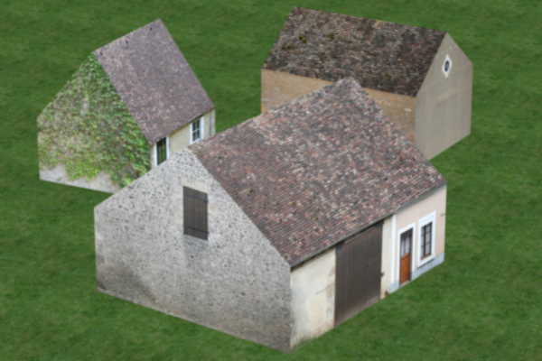
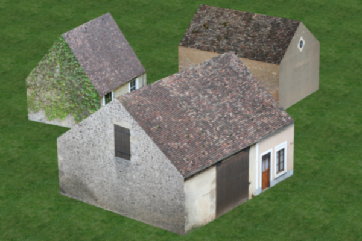
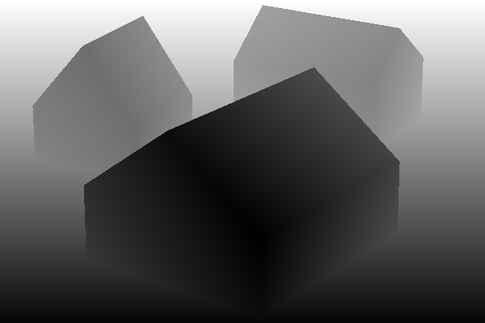
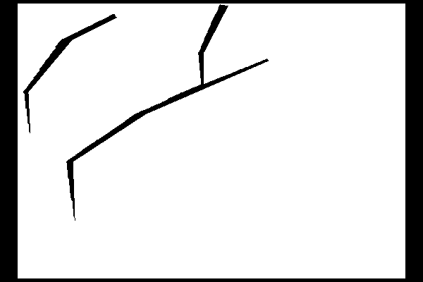

L. Moisan's simulated stereo pairs.
Simulated b/H : 0.0037.
Subsample by a factor 4 of the "Campagne1" images resulting in 600x400 images.
Quantized values [0,255], standard deviation of quantization error = 0.2887. (SNR:48dB)
Gaussian MTF with sigma = 0.8
Original images have gaussian MTF with sigma=1.4,
to obtain alias free subsampled images (factor 4) sigma of the original image must be 3.2.
Images corrected with gaussian filter std=sqrt(3.2^2 - 1.4^2)=2.877 previous to sampling.
Evaluation masks excludes boundaries and occluded areas.
download dataset 600x400




See Notes:
* Subsampling the ground truth disparity
* Computation of the occlusions of a disparity map
Subsampling the images
----------------------
The original images are already convolved by a gaussian with
std=1.4, which is almost the good variance for subsampling
the imaged by a factor 2 (1.6 = 2 x 0.8). To attain this level
of filtering we filter by a gaussian with std sqrt(1.6^2 - 1.4^2) = 0.775.
If we whant to subsample by a larger factor let's say 4,
then the high resolution image must be fitered with a gaussian with
std = 0.8 x 4 = 3.2, so the correction for the current image should
be a gaussian with std sqrt(3.2^2 - 1.4^2) = 2.877